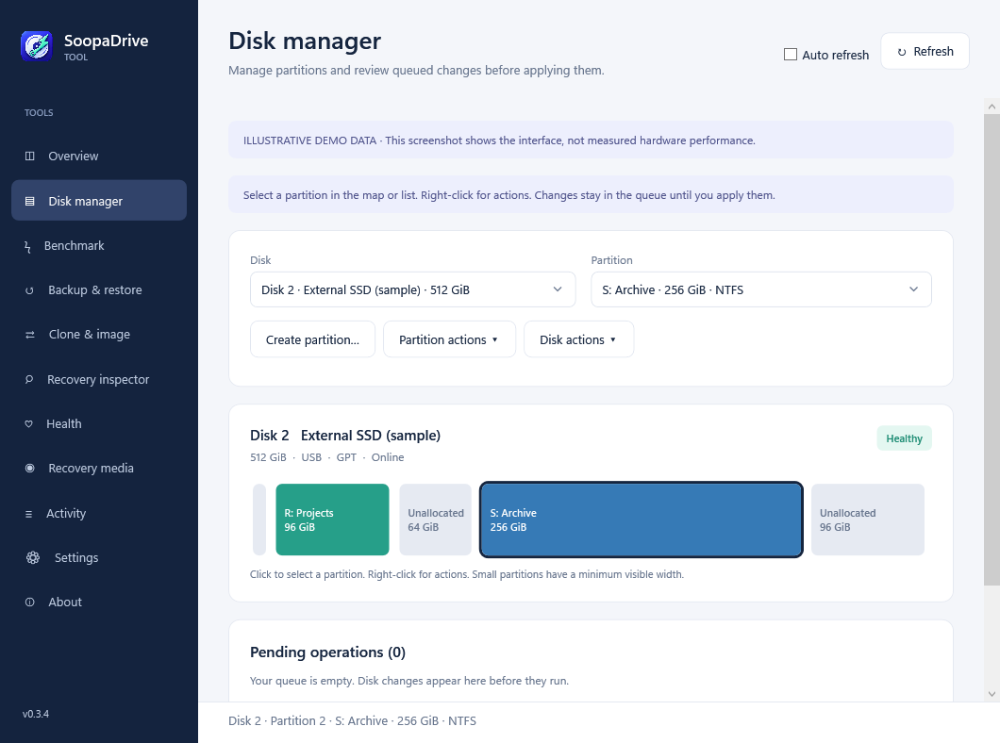
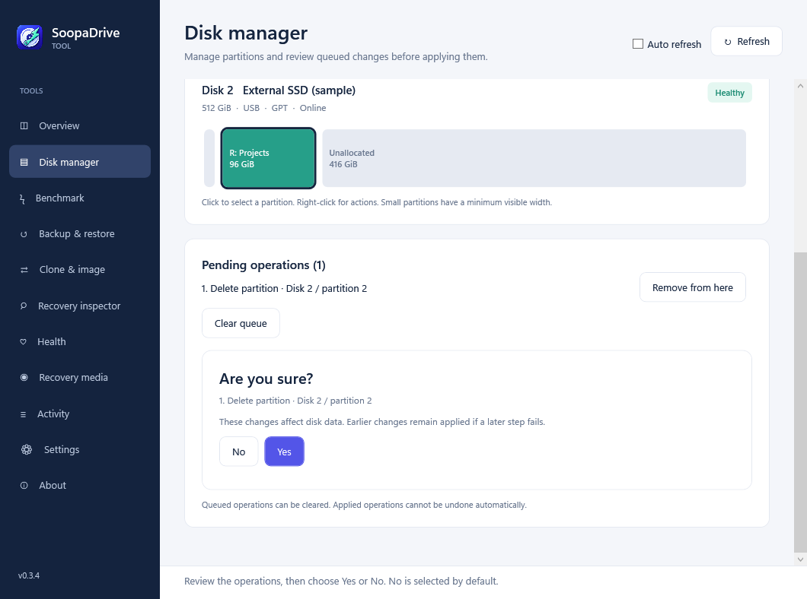

WINDOWS 11 · ARM64 / X64
Disk tools
for Windows.
SoopaDriveTool manages partitions, clones drives, creates backups, runs benchmarks, and exports drive health reports.
Free and open source · No account required
This release is unsigned. Read the supported operations and known limits before making changes to a disk.
Known limits ↗DISK MANAGER
Review partition changes
before applying them.
Click a partition in the map, then right-click for Move, Shrink, Expand, Format, Erase contents, Rename, or Delete. Queue several changes and review the resulting layout before applying them.

FEATURES
What it does
Partition management
Create, resize, move, split, and merge partitions. Redistribute free space or convert a supported partition table or filesystem. Prepare several changes and apply them as one queue.
- GPT and MBR conversion with existing data
- NTFS, exFAT, and FAT32 tools
- Layout preview and dependent operations
Drive benchmarks
Run Microsoft DiskSpd with sequential, random, or mixed access. Adjust the block size, queue depth, and thread count, then save results to compare with later runs.
- Native ARM64 and x64 benchmark engines
- Throughput, IOPS, and latency results
- Saved profiles, run history, and JSON/CSV exports
Cloning and backups
Clone every sector, copy used NTFS files, or migrate Windows. Live Windows cloning uses VSS to read a consistent snapshot. File and disk-image backups support encryption, schedules, and retained restore points.
- Live and inactive Windows UEFI cloning
- Encrypted full, incremental, and differential backups
- Retention rules and selective file restore
Recovery and wiping
Build WinPE media to restore images or repair UEFI boot files. Search for lost partitions and supported deleted files. To clear a disk, choose a quick partition reset or a full overwrite with read-back verification.
- ARM64 and x64 recovery applications
- File previews and a sector editor
- Zero, random, and three-pass overwrites
APPLY
Confirm the queued changes.
Apply opens a Yes/No review with No selected by default. Once confirmed, Activity shows the current step, progress when available, elapsed time, and remaining steps.

DRIVE HEALTH
SMART reports
and diagnostics.
View the SMART information exposed by your drive and controller, including ATA attributes, NVMe wear counters, error logs, and self-test history. The original device output is retained with the report.
Export JSON, CSV, text, or printable HTML with the model, serial number, and collection time. These reports can accompany maintenance, reconditioning, or resale records. Missing information is marked unavailable.
Read about diagnostics and reports ↗Report contents
- Model, serial number, and firmware
- Available SMART attributes and raw values
- Wear, power-on hours, and error counters
- Health flags, error logs, and self-test results
- Original JSON and text output
Available data depends on the drive and connection. A SMART report does not guarantee that a drive will remain reliable.
COMPATIBILITY AND TESTING
Requirements
and known limits.
The documentation lists the supported operations, their requirements, and the tests completed for this release.
Supported operations and test coverage ↗Which Windows PCs are supported?
Windows 11 on ARM64 or x64. Choose ARM64 for Snapdragon PCs and Windows VMs on Apple Silicon; choose x64 for Intel and AMD PCs. The .NET runtime is included. The app requests Windows administrator approval before opening. Select partitions in the map and right-click for actions. Apply opens a Yes/No review with No selected by default. Internal disks, USB drives, and external hard drives appear in the disk list. Enable Auto refresh to check for changes automatically.
What do I need for recovery media?
Install Microsoft's Windows ADK Deployment Tools and the matching WinPE add-on. SoopaDriveTool builds an ISO for the selected architecture and can include signed storage or network drivers. Microsoft boot files come from that ADK installation. Test that the media boots and can access your disks before relying on it.
What should I check before changing a disk?
Keep a separate backup and review the selected disk. Applied changes are not automatically undone if a later step fails. The running Windows disk is protected from partition changes; BitLocker and unknown encryption states also block these changes. File-based cloning needs separate scratch storage. Quick reset leaves file contents recoverable. The user guide describes the additional requirements for conversions and recovery.
What has been tested?
Tests cover temporary disks, independent ARM64 Windows clone and image-restore boots, encrypted recovery, ARM64/x64 builds, and installer behavior. Physical firmware erasure, x64 recovery boots, USB bridges, power interruption, and complete accessibility coverage still need testing. The installers are unsigned.
Test results and remaining limits ↗Download
Choose the installer for your Windows 11 PC.
The .NET runtime is included.
This preview is unsigned. Windows may show a publisher or SmartScreen warning. Check the downloaded file against the release's SHA-256 checksum.